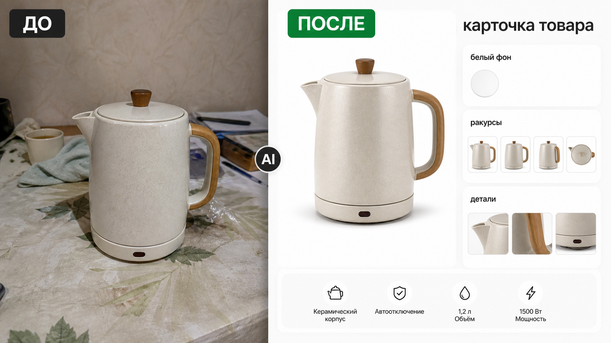

Промтзилла
Для карточки товара важно сохранить сам предмет, а улучшать только свет, фон, чистоту кадра и набор полезных ракурсов.

Пошаговая инструкция
- 1Сфотографируй товар без сильных бликов, закрытых углов и лишних предметов перед ним.
- 2Загрузи фото в инструмент редактирования фото онлайн.
- 3Вставь промт и попроси сохранить форму, материал и все важные элементы товара.
- 4Попроси белый фон, мягкую тень и несколько ракурсов для карточки.
- 5Проверь, что товар не изменился: размеры, цвет, текстура, кнопки и комплектующие должны совпадать.
Пример результата
На обложке показан сценарий до/после: исходное фото и результат, который можно получить через инструмент редактирования фото онлайн.
Промт
RU
Сделай из этого фото товара качественное предметное фото для маркетплейса. Важно: — сохрани форму, цвет, материал, пропорции и все особенности товара; — не меняй логотипы, маркировки, кнопки, упаковку и комплектацию, если они видны; — убери лишний фон и грязные предметы вокруг; — сделай чистый белый или светло-серый фон; — добавь мягкий студийный свет и реалистичную тень; — подготовь основной кадр и 3 маленьких ракурса: спереди, сбоку, деталь крупно; — результат должен выглядеть как честная карточка товара, а не как другой продукт. Если исходное фото не позволяет точно восстановить часть товара, напиши, какие детали требуют проверки.
EN
Turn this product photo into a high-quality marketplace product image. Important: — preserve the product shape, color, material, proportions, and all distinctive features; — do not change logos, markings, buttons, packaging, or included parts if visible; — remove the messy background and surrounding objects; — create a clean white or light gray background; — add soft studio lighting and a realistic shadow; — prepare the main image and 3 small angles: front, side, close-up detail; — the result should look like an honest product card, not a different product. If the source photo does not show part of the product clearly, state which details need checking.
Важно
Для маркетплейса нельзя менять свойства товара так, чтобы покупатель получил не то, что видит на карточке. ИИ должен улучшать съёмку, а не придумывать новый продукт.
Теги